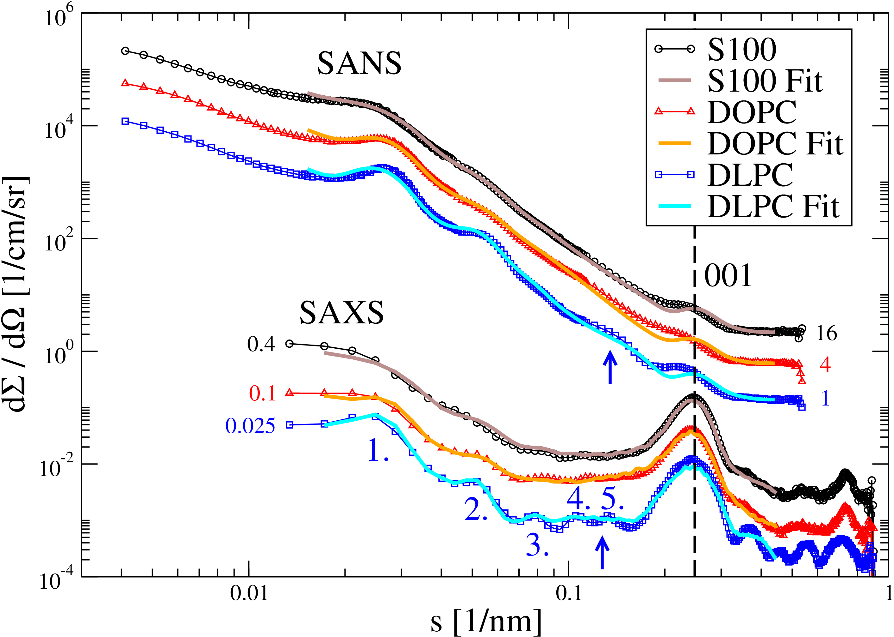
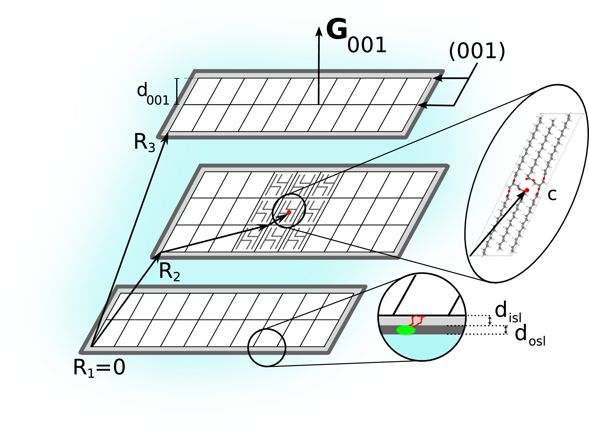
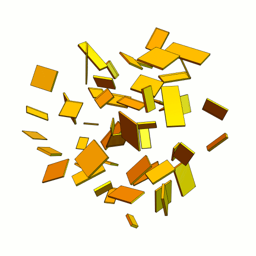
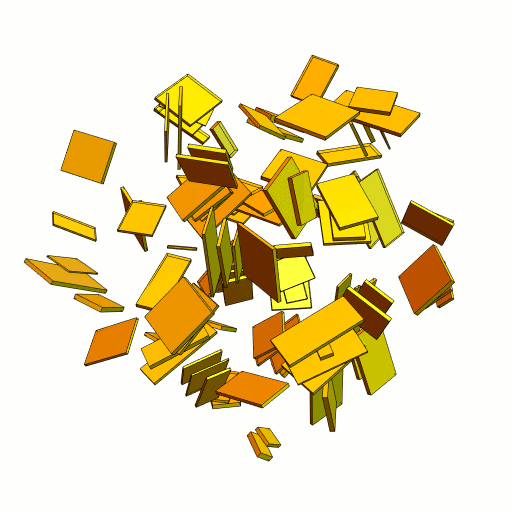

XNDiff
XNDiff allows to compute X-ray and neutron powder diffraction patterns of an ensemble of nanocrystals dispersed in solution. It is mainly intended for the analysis of small-angle X-ray and neutron scattering (SAXS, SANS) patterns which exhibit broad Bragg peaks in the small-angle scattering range (image below left).
Typically that is the case for dispersions of organic nanocrystals, such as from alkanes, mono-, di- and triglycerides, with disc- or platelet-like shapes, where the longest axis of the unit cell coincides with the direction of the smallest dimension of the nanocrystals. The Bragg peak(s) can provide some extra information beside the diffuse small-angle scattering signal since its width, shape and position can be quite sensitive on the thicknesses of the nanocrystals as well as the structure (thicknesses, scattering length densities) of a surrounding (stabilizer layer) shell.


Crystal structures can be provided in the CIF format and custom symmetry operations can be applied.
The present version allows simulations of nanocrystals with two shells around them (image above right), what is useful in the case of stabilizers and additives located on the surface of the nanocrystals. The nanocrystals have a parallelepidal shape (image below left), based on the unit cell's geometry, where all three dimensions may be subject to size distributions (Gaussian, Lognormal). The scattering patterns of nanocrystal assemblies such as stacks (image below right) can be computed as well.


The computed scattering data can be (simultaneously) fitted to different SAXS and SANS patterns with the software BatchMultiFit. Fit parameters are typically the scattering length densities and thicknesses of the shells as well as a volume weighted distribution of the nanocrystal thicknesses (number of unit cells).
XNDiff is open source and written in C and parallelized with OpenMP and can be run on any computer or HPC cluster with a *nix-based OS, however it does not (yet) support GPUs. BatchMultiFit is open source as well and written in WolframScript (Mathematica) and can be run in parallel on every supported platform (*nix, Windows, Mac).
The inner workings of the software are described in the publications:
M. Schmiele et al.
Phys. Rev. E 87, 062316 (2013)
M. Schmiele et al.
J. Phys. Chem. B 118(29), 8808-8818 (2014)
This software is developed, and maintained, by Martin Schmiele.
The code repositories are hosted on the Github pages of
XNDiff and
BatchMultiFit.